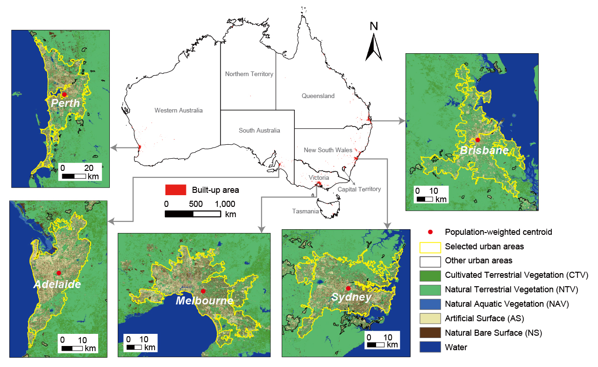
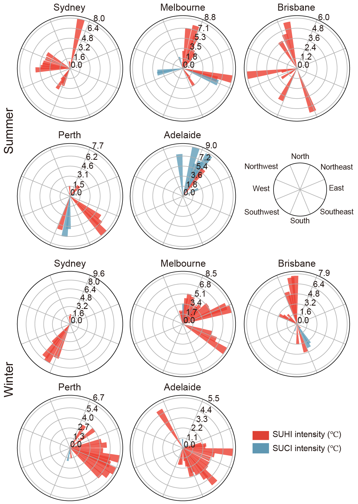
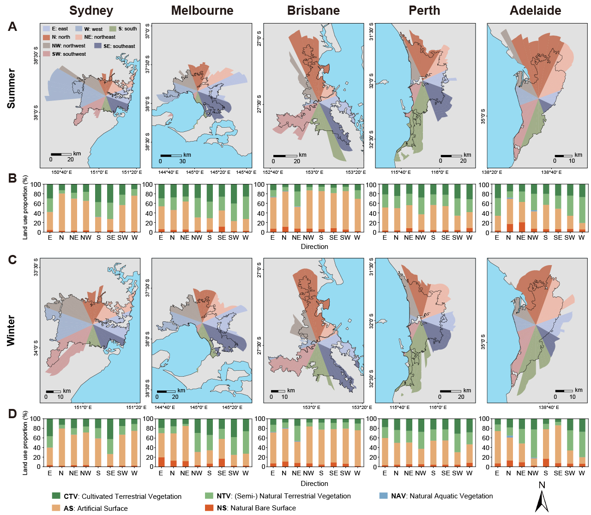
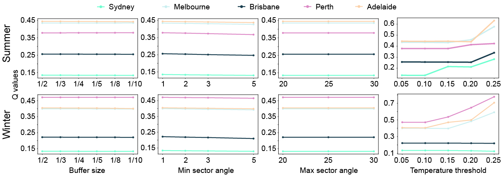
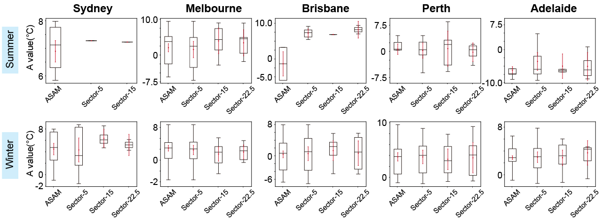
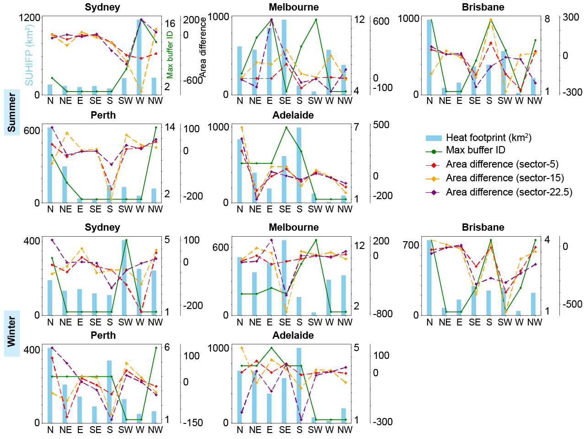

This paper develops the adaptive irregular anisotropy (AIA) model to estimate SUHI
footprint directions more realistically, reduce bias in footprint extraction, and
reveal unequal directional differences in major Australian cities.
Abstract
Footprint and intensity are key indicators for quantitatively analyzing the
characteristics of the surface urban heat island (SUHI) effect. Currently, methods
based on angle-segmentation and anisotropy have been developed to estimate footprints,
but are still greatly challenged by spatial heterogeneity, especially for directional
difference. This study develops an adaptive irregular anisotropy (AIA) model to explore
the irregular anisotropy in the SUHI effect. The developed AIA model is used to assess
the SUHI effect in Sydney, Melbourne, Brisbane, Perth, and Adelaide, Australia. The
model dynamically adjusts sector divisions based on the q value to maximize temperature
differences between sectors. The results show that the AIA model demonstrates reliable
directional adaptability. The SUHI footprint ratio extracted by the AIA model generally
ranges from 0 to 8 times the urban area, especially in regions dominated by artificial
surfaces or natural bare land. The AIA model also reduces the mean bias in SUHI
intensity estimates. Furthermore, the AIA model improves the q value by 1.1% to 44.1%
compared with existing anisotropy-based extraction models. In summary, this study
provides an adaptive SUHI effect estimation method to facilitate the development of
SUHI mitigation strategies.
Highlights
Identifies the irregular anisotropy of the surface urban heat footprint.
Proposes an AIA model to reduce the bias in footprint estimation.
Reveals unequal proportional differences between footprint directions.
Improves spatial heterogeneity assessment of the footprint by 1.1% to 44.1%.
Figures and Tables
Note: only figures drawn or visually refined by Kai Ren are displayed here.
注：此处仅展示由 Kai Ren 绘制或美化整理的图片。

Figure 1. Study area. The population-weighted data is calculated by using the centroid coordinates of each LGA from ABS, with the total population of each LGA as the weight for its centroid, to determine the centroid of the entire selected built-up area.图 1. 研究区。人口加权数据通过使用 ABS 提供的各 LGA 质心坐标，并以各 LGA 总人口作为其质心权重进行计算，从而确定整个研究建成区的总体质心。Figure 3. Sectoral temperature decay curve fitting and curvature-based inflection point extraction with turning point distribution across all sectors. A) and E) the AIA model identifies the position of a specific sector, while B) and F) show the temperature decay curve for that sector. The blue solid line represents the fitted result of the temperature decay curve, and the red dashed line represents the curvature change curve. The intersection of the dashed line with the blue solid line is the turning point, which is used to calculate SUHI intensity and SUHI footprint. C) and D) display the temperature decay curves and its average R2. G) and H) show the frequency distribution of turning points for all sectors.图 3. 各扇区温度衰减曲线拟合、基于曲率的拐点提取及所有扇区的拐点分布。A) 和 E) 表示 AIA 模型识别出的特定扇区位置，B) 和 F) 表示该扇区的温度衰减曲线。蓝色实线表示温度衰减曲线的拟合结果，红色虚线表示曲率变化曲线，二者交点即为拐点，用于计算 SUHI 强度和 SUHI 足迹。C) 和 D) 显示温度衰减曲线及其平均 R2。G) 和 H) 显示所有扇区拐点的频率分布。

Figure 4. Spatial differences in SUHI intensity (°C) distribution across eight directional angles. Each direction covers 45 degrees, starting with the north direction, whose angle range is from 337.5 to 22.5 degrees. The remaining directions are divided sequentially in a clockwise manner, with each directional marker pointing to the midpoint of its angle range (for example, the northeast direction has an angle range of 22.5 to 67.5 degrees, with its marker pointing to 45 degrees).图 4. 八个方向角下 SUHI 强度（°C）分布的空间差异。每个方向覆盖 45 度，从北向开始，其角度范围为 337.5 度至 22.5 度；其余方向按顺时针依次划分，每个方向标记指向其角度范围的中点（例如东北方向的角度范围为 22.5 度至 67.5 度，其标记指向 45 度）。

Figure 5. Spatial distribution of SUHI footprint and land use statistics across directions. A) and C) show the extracted SUHI footprint for summer and winter, respectively. B) and D) show the proportion of land cover types within each sector.图 5. 不同方向上的 SUHI 足迹空间分布及土地利用统计。A) 和 C) 分别表示夏季和冬季提取的 SUHI 足迹；B) 和 D) 表示各扇区内不同土地覆盖类型的比例。Figure 6. t-test validation of LST differences between sectors divided by the AIA model. A) shows two sectors (Sector 16 and 17) for example; B) LST distribution curves for two sectors; C) the distribution graph of the two sectors independent sample t-test; D) shows the LST mean values of each sector in the north and the significance test results of their pairwise comparisons. Asterisks indicate different significance levels; E) and F) display the t-test results between different sectors, where the x-axis represents the t-value, the left y-axis represents the eight directional angles, and the right y-axis indicates the proportion of sectors in each direction that passed the significance test.图 6. AIA 模型划分扇区之间地表温度（LST）差异的 t 检验验证。A) 以第 16 和第 17 扇区为例；B) 为两个扇区的 LST 分布曲线；C) 为两个扇区独立样本 t 检验结果分布图；D) 为北向各扇区 LST 均值及其两两比较的显著性检验结果，星号表示不同显著性水平；E) 和 F) 为不同扇区之间的 t 检验结果，其中 x 轴表示 t 值，左 y 轴表示八个方向角，右 y 轴表示各方向中通过显著性检验的扇区比例。

Figure 7. Sensitivity analysis of q values to AIA model parameters.图 7. q 值对 AIA 模型参数的敏感性分析。

Figure 8. Comparison of A-values between AIA model and different equal-angle division methods.图 8. AIA 模型与不同等角划分方法之间 A 值的比较。

Figure 9. Comparison of SUHI footprint anisotropy extracted by different methods.图 9. 不同方法提取的 SUHI 足迹各向异性比较。
![Figure 3. Sectoral temperature decay curve fitting and curvature-based inflection point extraction with turning point distribution across all sectors. A) and E) the AIA model identifies the position of a specific sector, while B) and F) show the temperature decay curve for that sector. The blue solid line represents the fitted result of the temperature decay curve, and the red dashed line represents the curvature change curve. The intersection of the dashed line with the blue solid line is the turning point, which is used to calculate SUHI intensity and SUHI footprint. C) and D) display the temperature decay curves and its average R2. G) and H) show the frequency distribution of turning points for all sectors.](../../../image/paper/2025-scs-co-xinyue/Fig-03.jpg)
![Figure 6. T-test validation of LST differences between sectors divided by the AIA model. A) shows two sectors (Sector 16 and 17) for example; B) LST distribution curves for two sectors; C) the distribution graph of the two sectors independent sample t-test; D) shows the LST mean values of each sector in the north and the significance test results of their pairwise comparisons. Asterisks indicate different significance levels; E) and F) display the t-test results between different sectors, where the x-axis represents the t-value, the left y-axis represents the eight directional angles, and the right y-axis indicates the proportion of sectors in each direction that passed the significance test.](../../../image/paper/2025-scs-co-xinyue/Fig-06.jpg)